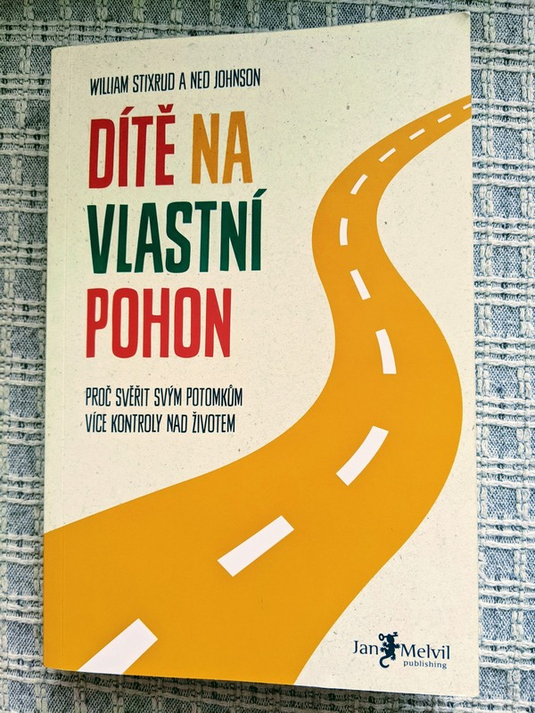
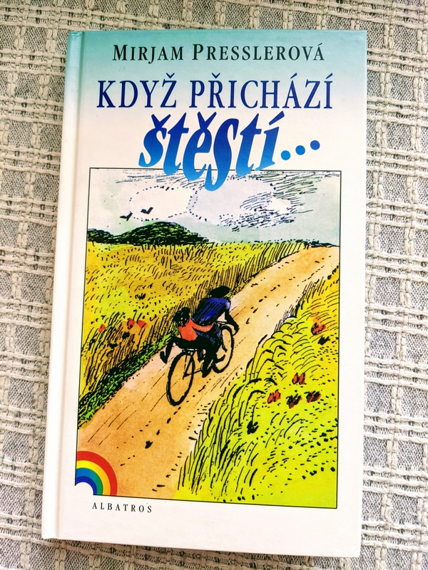
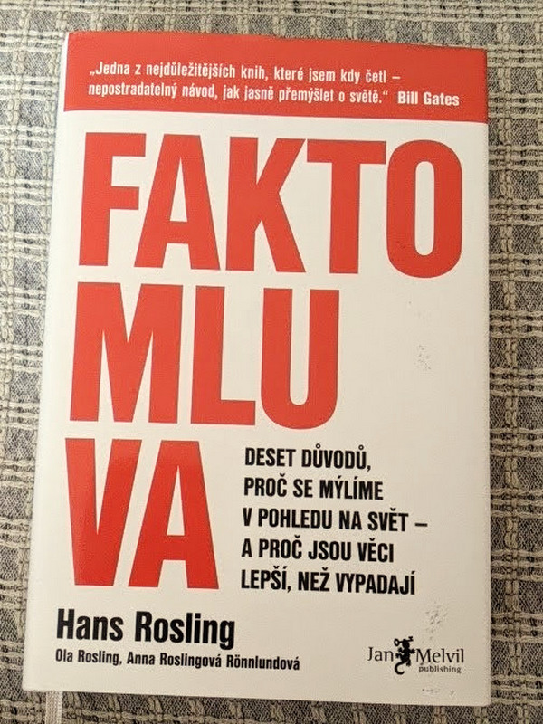

Chvilky mého historicky druhého víkendu bez dítěte jsem využila (krom celkem intenzivního jógového kurzu) k sepsání článku o tom, jaké zajímavé knihy mě provázely uplynulým jarem.
William Stixrud a Ned Johnson - Dítě na vlastní pohon
První “Melvilovka” z vánoční nadílky, do které jsem se pustila. Inspirující, byť zaměřená spíše už na děti školou povinné/v americkém systému školství, ale každopádně obzory rozšiřující. Určitě se k ní dá vracet. Na konci každé kapitoly najde rodič praktické tipy, které může doma okamžitě aplikovat. Obzvlášť zajímavá mi přišla kapitola Online 24/7, která se zaměřuje na technologie, kterým jsou v dnešní době děti vystaveny už odmala, a jejich dopadům na lidský mozek.

Mirjam Presslerová - Když přichází štěstí…
Pro odlehčení jsem vyhrabala ze své dětské knihovničky tuto útlou knížečku německé spisovatelky Mirjam Presslerové, i když téma to vlastně moc odpočinkové není. Příběh se odvíjí pár let po skončení druhé světové války v dětském domově a jeho vypravěčkou je dvanáctileté židovská holčička Halinka. Z různých střípků si čtenář postupně utváří obraz o Halinčině neveselé minulosti, byť toho spoustu zůstává nevyřčeno či jen mezi řádky. Melancholickou poetiku příběhu hezky doplňují černobílé ilustrace Zdeny Táborské.

Hans Rosling - Faktomluva
A toto je za mne překvapivě asi zatím nejlepší “Melvilovka”! Mimořádně zábavná a čtivá - a to vážně nejsem člověk, který by si liboval v grafech (na rozdíl od Péti, který mi ji vybral :-D). Kniha plná konkrétních důkazů o tom, že náš svět na tom vlastně není tak špatně, jak se domníváme, a že máme spoustu důvodů k optimismu, je proložena spoustou zajímavých příběhů ze života a lékařské praxe autora, Hanse Roslinga. Jediné smutné na tom je, že Hans Rosling zemřel v roce 2017 na rakovinu slinivky. Tak ráda bych si od něj přečetla názor na pandemii covidu nebo aktuální válečný konflikt v Evropě - dvě z pěti hrozeb, které by nám, dle jeho názoru, skutečně měly dělat vrásky na čele (ty další 3 jsou finanční kolaps, klimatická změna a extrémní chudoba). Tak či tak vám Faktomluvu moc doporučuji - je to jedna z těch méně nápadných knih, která by snadno mohla proklouznout vaší pozornosti a to by byla vážně škoda!
